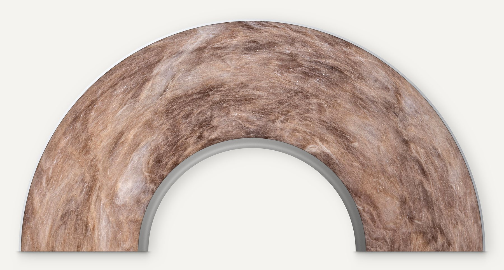
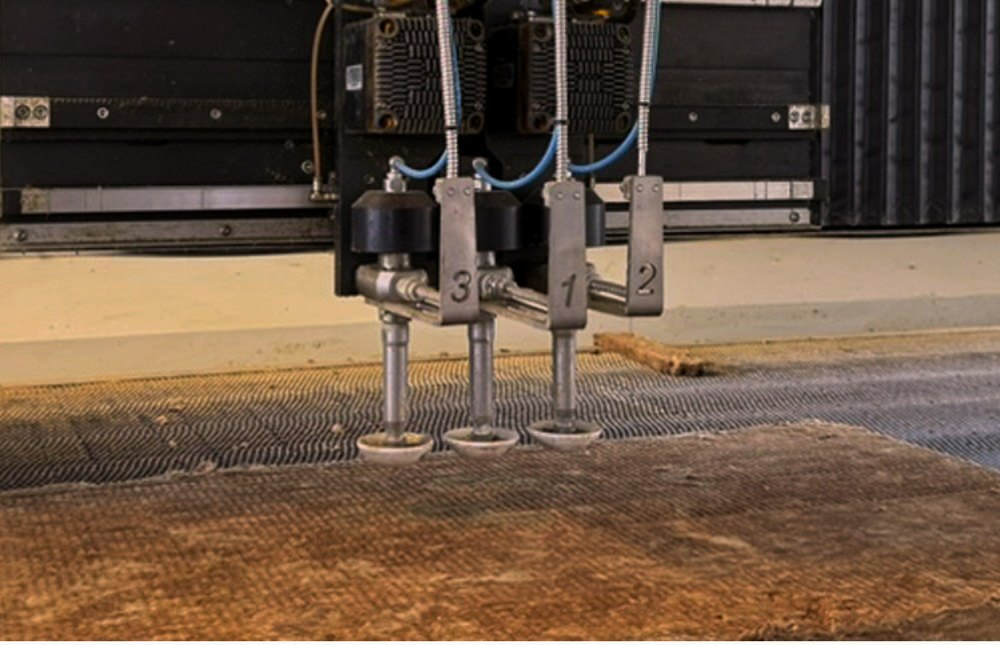
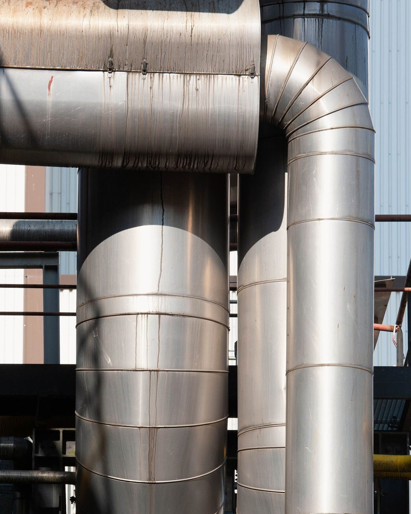

Isolanti termoacustici
Per industria, edilizia e navale: a magazzino a Saonara, tagliati su misura, consegnati il più delle volte con mezzi propri.

Otto famiglie, a magazzino
Coppelle, feltri, pannelli, lastre e tubi, nastri e colle. Per ogni prodotto, la scheda tecnica del produttore.
Mentre scrivete, al posto delle famiglie compaiono le schede del catalogo.
Lana di roccia
Coppelle, pannelli, feltri e sfusa.
Lana di vetro
Coppelle, pannelli, feltri e sfusa.
Elastomero espanso
Lastre, tubi, K-Fonik, Solar e Duct.
Isolanti nanotecnologici
Aerogel, per problemi di spazio e prestazioni eccezionali.
Protezione al fuoco
Pannelli, feltri e coppelle in calcio silicato e lana di roccia, Tecnofire REI 120.
Fonoisolanti
Dove il rumore non passa: piramidale, bugnato, accoppiati con massa.
Rivestimenti
Lamierini e alluminio calandrato, tessuti di vetro.
Accessori
Nastri in alluminio, colle, punteruoli e chiodi, terminali.
Pezzi su misura, lavorati in casa
Insonorizzazione di macchinari, isolamento termico di forni, condizionatori, cisterne o tubi di scarico. Con la lavorazione interna siamo rapidi nei tempi, competitivi nei prezzi e riservati sui progetti dei clienti.
Materiali: lana di roccia, lana di vetro, elastomero espanso, prodotti nanotecnologici. Mandate il disegno a info@termitisolanti.com

Settori
Industria
Dalla lana di roccia alla fibra di vetro per alte temperature, dall'alluminio calandrato ai refrattari.
Edilizia
Lana di vetro, elastomero espanso, canne fumarie, accessori.
Navale
Coppelle di vetro certificate RINA, cuscini REI 120, tutto quello che serve per l'installazione navale.
Una storia lunga più di cinquant'anni
Certificati UNI EN ISO 9001 dal 2004 (RINA, n. 10957/04/S) per la produzione e la commercializzazione di manufatti isolanti termici ed acustici. Le consegne viaggiano il più delle volte con mezzi propri, su automezzi lunghi circa 10 metri: il materiale ingombrante non va con i corrieri espressi. Medaglia di bronzo EcoVadis, soci ANICTA ed EIIF.
PartnerKnauf Insulation, Ursa, K-Flex, Unifrax, Morgan, Coroplast; deposito Dörken Delta, con tutta la gamma a stock.Con il nostro marchioTermit Isolbag 039, feltro e pannello imbustato, λD 0,039 W/mK.

Materiale in pronta consegna
049 640060- info@termitisolanti.com
- Magazzino
- Via Emilia Romagna 19, 35020 Saonara (PD)
- Orari
- Dal lunedì al venerdì, 8.30-12.30 e 14.00-18.00